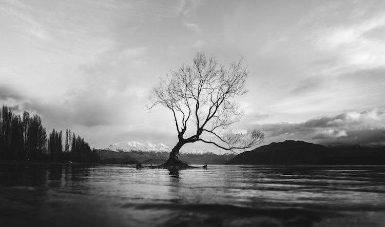

<div class="presentation">
  <div class="container">
    <div class="title">
      <span>HI,I'M</span>
      <div class="slider">
        <span>YANIS</span>
        <span>CREATIVE</span>
        <span>AMBITIOUS</span>
      </div>
    </div>
    <p>
      As a student in the second year of the GAED Master's degree in Transition
      and planning, I have acquired a lot of knowledge in the fields of urban
      planning, environment urban planning, environment and development of
      territories. territories. Through this knowledge, I developed a particular
      interest in urban planning and its interest in urban planning and its
      relationship with natural spaces. The preservation of the natural heritage
      and its biodiversity, the management of resources, but also urban
      mobility, are notions that are particularly dear to me and that I would
      that I would like to discover in the field.
    </p>
  </div>
  
</div>
